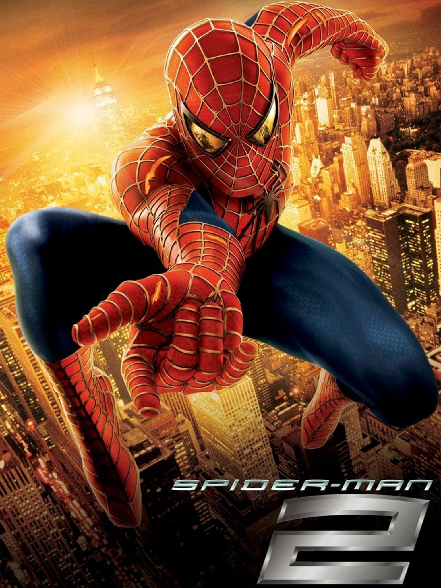
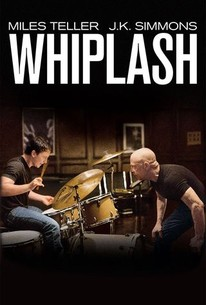
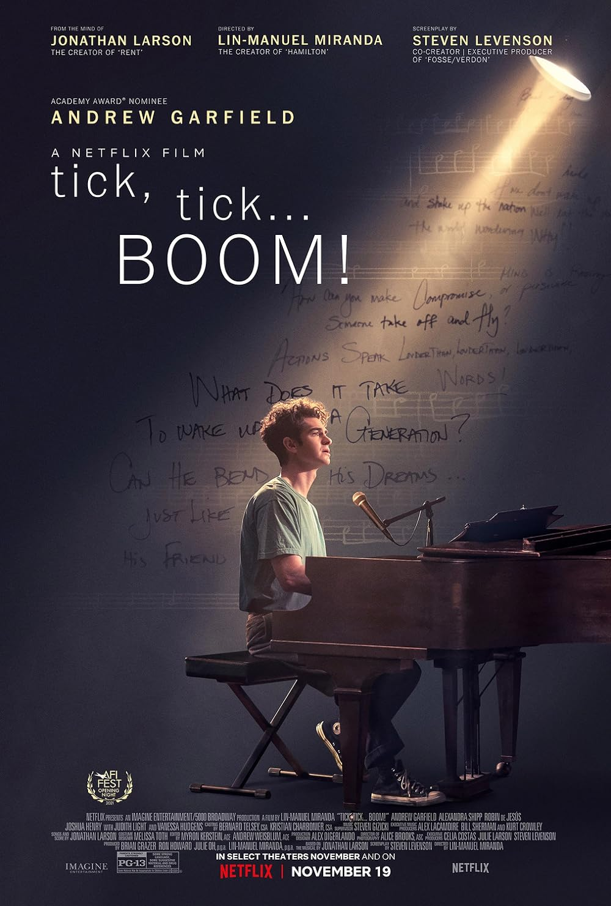

Las peliculas son el medio de expresion mas importantes de todas que nos permiten explorar mundos unicos que normalmente no podemos vivir, nos hacen sentir tantas emociones en tan poco tiempo, son la experiencia mas unica que existe junto a otros medios como las series y videojuegos.
Ambientada dos años después de los eventos de Spider-Man (2002), la película encuentra a Peter Parker luchando por manejar tanto su vida personal como sus deberes como Spider-Man, lo que afecta su vida civil dramáticamente. Mientras tanto, el Doctor Otto Octavius se convierte en un villano diabólico conocido como el Doctor Octopus después de que un experimento fallido mata a su esposa y lo deja neurológicamente fusionado a tentáculos mecánicos. Spider-Man debe evitar que recree con éxito el peligroso experimento, mientras lidia con un deseo subconsciente de dejar de ser superhéroe que lo está despojando de sus poderes arácnidos. La inspiración de Raimi para la película provino del debut en el cómic de Doctor Octopus en 1964, el arco de la historia de 1966 If This Be My Destiny...! y el arco de la historia de 1967 Spider-Man No More!.
Whiplash cuenta la historia de Andrew Neiman, un joven y ambicioso baterista de jazz que estudia en el mejor conservatorio de música de Estados Unidos. Su vida cambia cuando el implacable y despiadado director de orquesta Terence Fletcher lo selecciona para formar parte de su banda. Lo que sigue es una intensa lucha de poder que explora los límites del sacrificio en nombre del arte y la obsesión por alcanzar la grandeza.
Tick, Tick... Boom! sigue a Jon, un joven compositor de teatro que navega por los desafíos de la vida mientras se enfrenta a la presión de cumplir sus sueños antes de que sea demasiado tarde. Con la música y el teatro como telón de fondo, la película explora la lucha por encontrar el éxito en el mundo del entretenimiento, mientras Jon equilibra su pasión, relaciones y las realidades de la vida.
